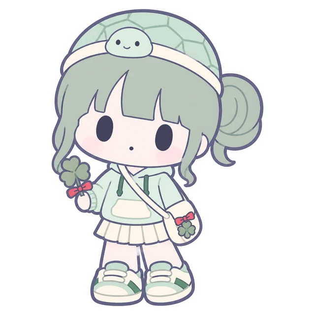

네 번 고르면 열여섯 동물 가운데 하나가 나와요. 그 동물로 부적 카드 한 장을 뽑아요.
- 네 번 고르기1월, 12월 31일, 금요일 밤, 그리고 2027 소원. 네 장면에서 하나씩 골라요.
- 태어난 해는 선택첫 질문 위 칸에 넣으면 카드에 그 띠의 오행 컬러와 사주 도장(예: 午 · 화(火) · 귀인·육합운), 2027 사주 부적 한 줄이 함께 붙어요. 비워두어도 카드는 그대로 나와요.
- 카드는 PNG1080×1350 카드와 프사용 1080×1080을 저장할 수 있어요. 카톡·인스타 안에서는 화면에 뜬 이미지를 길게 눌러 저장해요. 길게 눌러도 저장이 안 되면 카톡 오른쪽 위 ⋯에서 ‘다른 브라우저로 열기’를 골라 주세요.
- 모두의 보너스 부적결과 카드 아래 ‘모두의 보너스 부적’을 누르면 2027 정미년 수호 양 복실양 카드가 한 장 더 나와요. 이 카드도 PNG로 저장해요.
- 링크로 공유주소에 유형과 연도만 담겨요. 서버에 아무것도 저장하지 않아서 링크를 가진 사람만 열어볼 수 있어요.
부적 열여섯 동물
소원마다 네 마리씩, 모두 열여섯 동물이에요.
- 01제비가고 싶은 곳으로
- 02잉어막힘없이 통과
- 03토끼어디서든 편해요
- 04까치좋은 소식 먼저
- 05다람쥐잔고 두둑해져요
- 06부엉이지갑 지켜줘요
- 07강아지내 편만 골라줘요
- 08

거북이재촉이 안 통해요
- 09고양이불러만 두면 와요
- 10여우분위기를 먼저 알아요
- 11사슴한 번에 붙어요
- 12수달급할 일이 없어요
- 13두꺼비돈이 붙어 있어요
- 14학첫 장부터 술술
- 15나비끊긴 연락이 이어져요
- 16판다누워 있어도 굴러가요
자주 묻는 질문 5개
- 2027년은 무슨 해인가요?
- 2027년은 정미년(丁未年)으로 양띠의 해예요. 그래서 부적 카드마다 정미년을 지키는 수호 양 스티커가 함께 붙어요.
- 결과 유형은 어떻게 정해지나요?
- 네 번 고르면 열여섯 유형 가운데 하나가 나와요. 마지막에 소원을 고르면 그 소원 쪽 동물 네 마리 중 앞선 세 답에 맞는 한 마리가 나와요. 사주나 점은 보지 않아요.
- 태어난 해를 넣지 않아도 되나요?
- 네, 비워두고 진행해도 부적 카드는 그대로 나와요. 태어난 해를 넣으면 카드 윗줄에 띠가 붙고, 그 띠의 오행 컬러와 사주 도장(예: 午 · 화(火) · 귀인·육합운), 2027 사주 부적 한 줄이 함께 들어가요.
- 카드 이미지가 저장되지 않을 때는 어떻게 하나요?
- 카카오톡이나 인스타그램 안에서 열면 저장이 막힐 수 있어요. 그때는 화면에 뜬 카드 이미지를 길게 눌러 저장하면 돼요. 그래도 안 되면 카톡 오른쪽 위 ⋯에서 ‘다른 브라우저로 열기’를 골라 주세요.
- 친구가 보낸 링크를 열면 무엇이 보이나요?
- 친구가 뽑은 부적 카드가 그대로 보여요. 아래 ‘나도 내 부적 뽑기’를 누르면 내 부적을 새로 뽑을 수 있어요.
부적 카드는 재미로 보는 카드예요. 유형은 사주나 점 없이 고른 답 네 개로만 정해요. 태어난 해를 넣었을 때 붙는 띠 사주 한 줄은 그 띠와 2027 정미년의 관계를 적은 참고 문구예요.